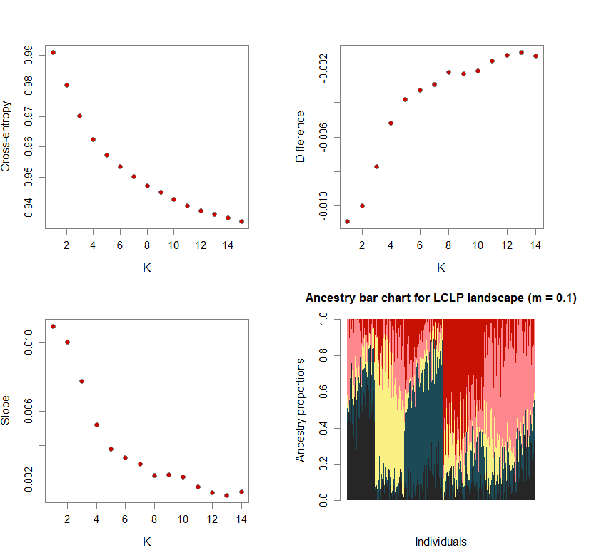
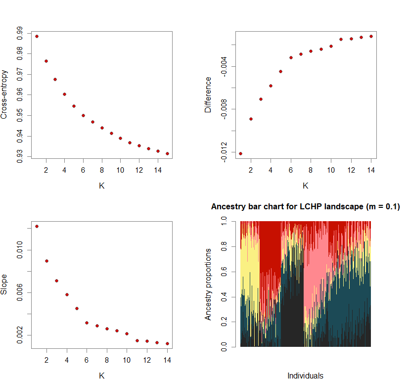
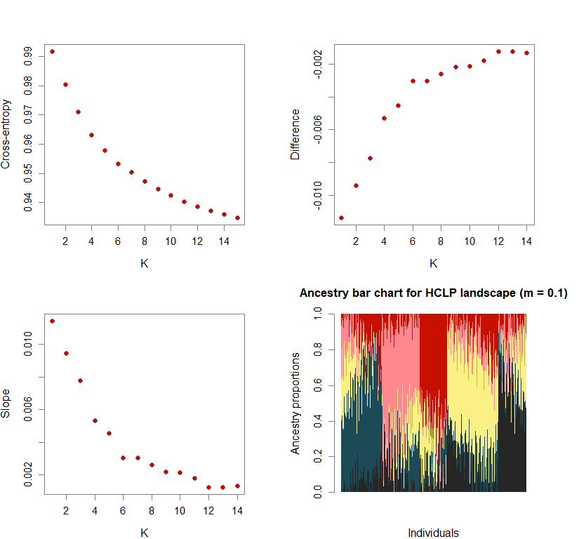
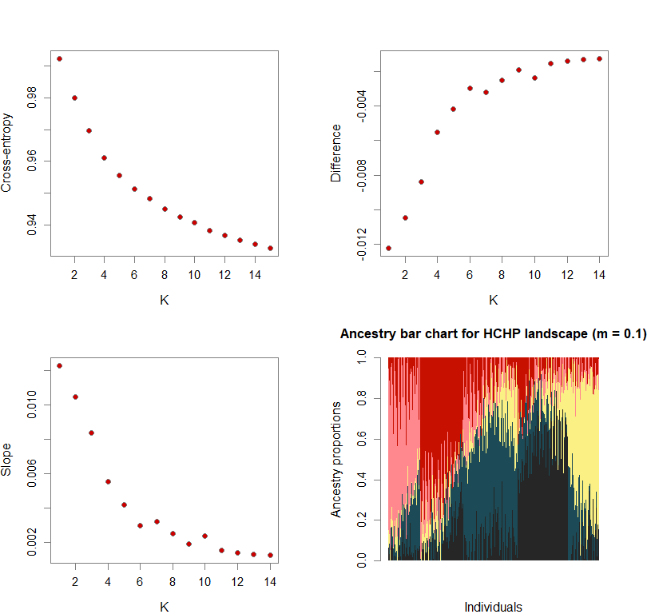
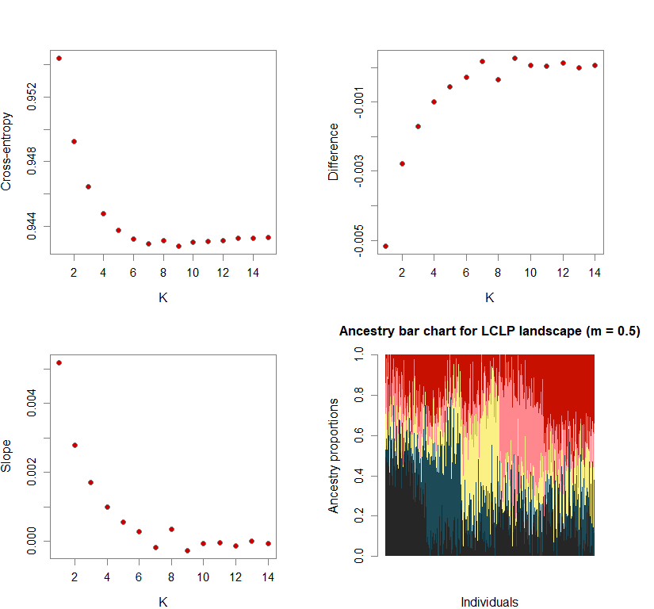
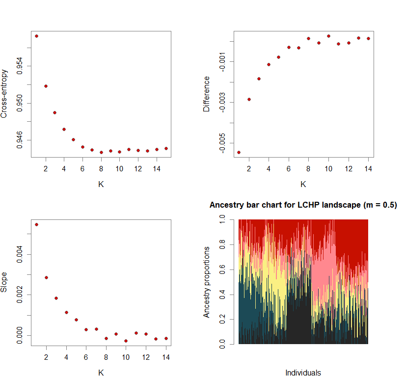
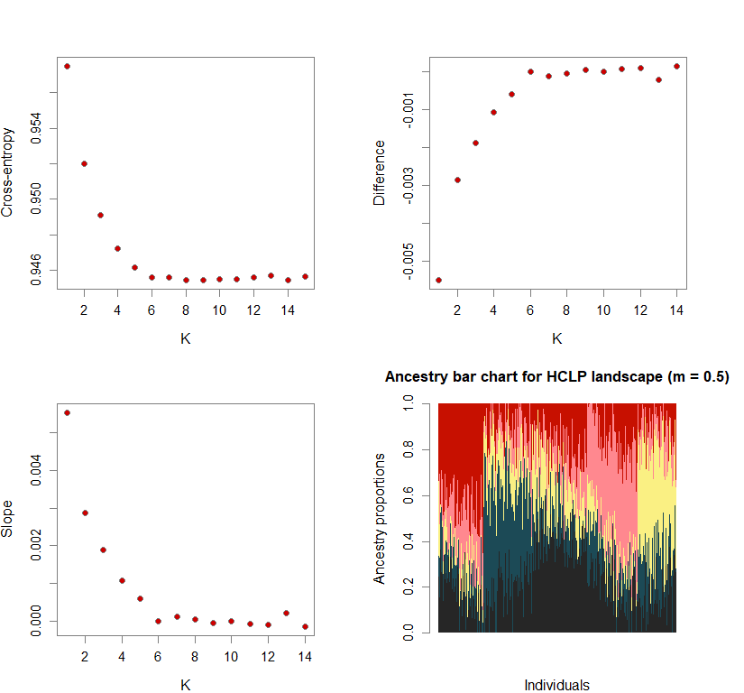
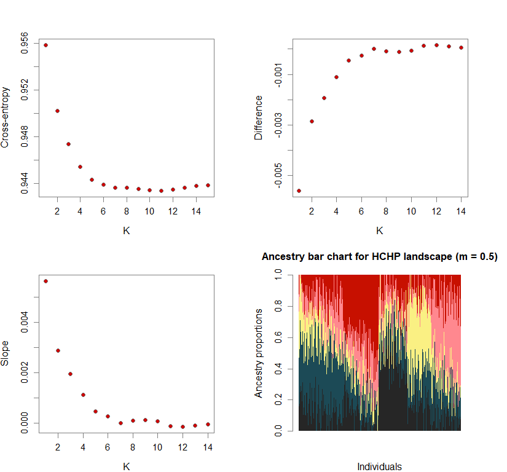

Cross-Entropy and Clustering
Using minimum cross-entropy (MinXEnt) to determine the number of genetic clusters (K) is not always straightforward.
Sometimes, the difference in cross-entropy from K = n to K = n + 1 is negligible. Thus, selecting the K at which cross-entropy is at its mininimum may lead to an overestimation of K. To fix this, I use minimization of “slope.” Slope = e-difference - 1 (where difference = XEntn + 1 - XEntn). In other words, the smallest K is selected where the cross-entropy difference starts to plateau and slope approaches zero. This is achieved by selecting K based on the lowest slope value in the upper quartile.
#determining best K and picking best replicate for best K
ce <- list()
for(k in 1:maxK) ce[[k]] <- cross.entropy(snmf.obj, K=k)
ce.K <- c()
for(k in 1:maxK) ce.K[k] <- min(ce[[k]])
diff <- ce.K[-1] - ce.K[-maxK]
slope <- exp(-diff) - 1
#K is selected based on the smallest slope value in the upper quartile
best.K <- min(which(slope <= quantile(slope)[4]))
best.run <- which.min(ce[[best.K]])
Number of genetic clusters based on cross-entropy slope approaching zero
While I am highlighting here one approach to select the optimal value of K, it should be noted that the NALgen method is not sensitive to K (the response variable is a gene flow metric).
library(adegenet)
library(ggsci)
library(LEA)
library(mapplots)
library(maps)
library(changepoint)
futr <- pal_futurama()
schwifty <- pal_rickandmorty()
futr.cols <- colorRampPalette(futr(12)[c(12,11,3,7,8,6,1,2)])
schwifty.cols <- colorRampPalette(schwifty(12)[c(3,12,4,6,1,9,8,2)])
futrschwift.cols <- colorRampPalette(c("gray15", schwifty(12)[3], futr(12)[11], schwifty(12)[c(1,9)], futr(12)[c(8,6,2)]))
cols <- futrschwift.cols(12)
#plot parameters
par(mfrow=c(2,2), fg="gray50", pty='m', bty='o', mar=c(4,4,4,4), cex.main=1.3, cex.axis=1.1, cex.lab=1.2)
genind_names <- c("full_m0.1_lclp_n.s",
"full_m0.1_lchp_n.s",
"full_m0.1_hclp_n.s",
"full_m0.1_hchp_n.s",
"full_m0.5_lclp_n.s",
"full_m0.5_lchp_n.s",
"full_m0.5_hclp_n.s",
"full_m0.5_hchp_n.s")
ls_names <- c("LCLP landscape (m = 0.1)",
"LCHP landscape (m = 0.1)",
"HCLP landscape (m = 0.1)",
"HCHP landscape (m = 0.1)",
"LCLP landscape (m = 0.5)",
"LCHP landscape (m = 0.5)",
"HCLP landscape (m = 0.5)",
"HCHP landscape (m = 0.5)")
lea.dir <- c(
"C:/Users/chazh/Documents/Research Projects/Reticulitermes/Simulations/popRange/m_0_1/Simulated_Landscapes/500neutral+50selectedSNPs/Low_Complexity_Landscapes/landscapeR/Low_Permeability/",
"C:/Users/chazh/Documents/Research Projects/Reticulitermes/Simulations/popRange/m_0_1/Simulated_Landscapes/500neutral+50selectedSNPs/Low_Complexity_Landscapes/landscapeR/High_Permeability/",
"C:/Users/chazh/Documents/Research Projects/Reticulitermes/Simulations/popRange/m_0_1/Simulated_Landscapes/500neutral+50selectedSNPs/High_Complexity_Landscapes/virtualspecies/Low_Permeability/",
"C:/Users/chazh/Documents/Research Projects/Reticulitermes/Simulations/popRange/m_0_1/Simulated_Landscapes/500neutral+50selectedSNPs/High_Complexity_Landscapes/virtualspecies/High_Permeability/",
"C:/Users/chazh/Documents/Research Projects/Reticulitermes/Simulations/popRange/m_0_5/Simulated_Landscapes/500neutral+50selectedSNPs/Low_Complexity_Landscapes/landscapeR/Low_Permeability/",
"C:/Users/chazh/Documents/Research Projects/Reticulitermes/Simulations/popRange/m_0_5/Simulated_Landscapes/500neutral+50selectedSNPs/Low_Complexity_Landscapes/landscapeR/High_Permeability/",
"C:/Users/chazh/Documents/Research Projects/Reticulitermes/Simulations/popRange/m_0_5/Simulated_Landscapes/500neutral+50selectedSNPs/High_Complexity_Landscapes/virtualspecies/Low_Permeability/",
"C:/Users/chazh/Documents/Research Projects/Reticulitermes/Simulations/popRange/m_0_5/Simulated_Landscapes/500neutral+50selectedSNPs/High_Complexity_Landscapes/virtualspecies/High_Permeability/"
)
bestK <- c()
for (i in 1:8){
setwd(lea.dir[i])
reps <- 5
maxK <- 15
#loading saved files from previous LEA run
snmf.obj <- load.snmfProject(paste0(genind_names[i],".snmfProject"))
#determining best K and picking best replicate for best K
ce <- list()
for(k in 1:maxK) ce[[k]] <- cross.entropy(snmf.obj, K=k)
ce.K <- c()
for(k in 1:maxK) ce.K[k] <- min(ce[[k]])
diff <- ce.K[-1] - ce.K[-maxK]
slope <- exp(-diff) - 1
#K is selected based on the smallest slope value in the upper quartile
best.K <- min(which(slope <= quantile(slope)[4]))
best.run <- which.min(ce[[best.K]])
bestK[i] <- best.K
plot(ce.K, pch=21, cex=1.1, bg="red3", ylab="Cross-entropy", xlab="K")
plot(diff, pch=21, cex=1.1, bg="red3", ylab="Difference", xlab="K")
plot(slope, pch=21, cex=1.1, bg="red3", ylab="Slope", xlab="K")
barchart(snmf.obj, K=best.K, run=best.run,
border=NA, space=0, col=futrschwift.cols(best.K),
xlab="Individuals", ylab="Ancestry proportions",
main=paste("Ancestry bar chart for", ls_names[i]))
}

names(bestK) <- ls_names
print(bestK)
## LCLP landscape (m = 0.1) LCHP landscape (m = 0.1) HCLP landscape (m = 0.1)
## 5 5 5
## HCHP landscape (m = 0.1) LCLP landscape (m = 0.5) LCHP landscape (m = 0.5)
## 5 5 5
## HCLP landscape (m = 0.5) HCHP landscape (m = 0.5)
## 5 5